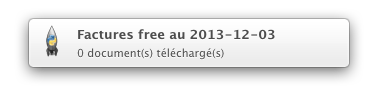

Dans mon dernier article, nous avons vu comment programmer le déclenchement périodique d'un programme dans Mountain Lion grace à l'utilitaire launchd. J'aimerais maintenant être averti de la bonne exécution de mon programme via le centre de notifciation de Mountain Lion.
Ce qui est décrit ci-dessous est librement inspiré de cet article en anglais.
Pour pouvoir envoyer un message dans le centre de notification de Mountain Lion et afficher une pop-up, il faut obligatoirement que l'application soit reconnu par Apple via le "bundle identifier". Pour mon petit programme Python à moi, je ne vais pas demander un identifiant, alors pour pouvoir malgré tout envoyer un message, je vais adopter la stratégie du coucou et emprunter un bundle identifier existant. Par exemple celui de du programme Python Launcher (puisque que je lance un programme Python). Je vais donc faire croire au centre de notification que c'est l'application Python Launcher qui envoie un message.
Tout d'abord, comment récupérer le bundler identifier? Avec la commande suivante dans le terminal :
$ osascript -e 'id of app "Python Launcher"'
org.python.PythonLauncher
Maintenant, décorons !
1 2 3 4 5 6 7 8 9 10 11 12 13 14 15 16 17 18 19 20 21 22 23 24 25 26 27 28 29 30 31 32 33 34 35 36 37 38 39 40 41 42 43 44 45 46 47 48 49 50 51 52 53 54 55 56 57 58 59 60 61 62 63 64 65 | #!/usr/bin/python
import objc
########################################################################
# Le décorateur #
########################################################################
def swizzle(*args):
"""
Decorator to override an ObjC selector's implementation with a
custom implementation ("method swizzling").
Use like this:
@swizzle(NSOriginalClass, 'selectorName')
def swizzled_selectorName(self, original):
--> `self` points to the instance
--> `original` is the original implementation
"""
cls, SEL = args
def decorator(func):
old_IMP = cls.instanceMethodForSelector_(SEL)
def wrapper(self, *args, **kwargs):
return func(self, old_IMP, *args, **kwargs)
new_IMP = objc.selector(wrapper, selector=old_IMP.selector,
signature=old_IMP.signature)
objc.classAddMethod(cls, SEL, new_IMP)
return wrapper
return decorator
@swizzle(objc.lookUpClass('NSBundle'), b'bundleIdentifier')
def swizzled_bundleIdentifier(self, original):
"""Swizzle [NSBundle bundleIdentifier] to make NSUserNotifications
work.
To post NSUserNotifications OS X requires the binary to be packaged
as an application bundle. To circumvent this restriction, as it would
be difficult (impossible?) to implement in an Alfred Extension,
we modify `bundleIdentifier` to return a fake bundle identifier.
"""
# Return Python Launcher's bundle identifier to display the Python Launcher logo.
return 'org.python.PythonLauncher'
########################################################################
# L'envoi de la noticiation au centre de notification #
########################################################################
def notify(title, text):
"""Display a NSUserNotification on Mac OS X >= 10.8"""
NSUserNotification = objc.lookUpClass('NSUserNotification')
NSUserNotificationCenter = objc.lookUpClass('NSUserNotificationCenter')
notification = NSUserNotification.alloc().init()
notification.setTitle_(title)
notification.setInformativeText_(text)
NSUserNotificationCenter.defaultUserNotificationCenter().deliverNotification_(notification)
|
Le principe de base est de "décorer" la fonction renvoyant le bundle identifier, c'est à dire que nous affectons son comportement temporairement (mais sans la modifier), pour qu'elle renvoie l'identifiant que nous lui passons. Pour cela, nous utilisons un décorateur Python. Pour plus d'informations sur le fonctionnement des décorateurs, vous pouvez aller sur le site du zéro ou sur le blog de Sam et Max.
Ensuite dans la fonction notify(), nous envoyons un message au centre de notification de Mountain Lion qui pensera que c'est l'application Python Launcher qui envoie le flux. Colossale feinte de sioux !
Le résultat en image

Le tout s'appuie sur le projet PyObjC qui développe une passerelle entre Python et ObjC et dont vous trouverez la documentation ici.
Contrairement au paquet pync (un wrapper Python de terminal-notifier qui permet d'envoyer des messages au centre de notification depuis le terminal) qui ne sait pas envoyer des messages hors d'une session du terminal, ici, il sera possible d'envoyer des notifications même si le programme est déclenché en mode batch par launchd.
Voilà, c'est tout pour Mac OS X pour le moment, la prochaine fois, retour sur Linux.
Pour la petite histoire, ce qu'on vient de faire tient en trois lignes de code sous Linux grâce à la bibliothèque pynotify :
1 2 3 4 5 6 | pynotify.init("Free.py")
n = pynotify.Notification(
"Titre\n", # Titre
"Message", # Message
"/home/letchap/Image/application_pdf.png") # Image
n.show()
|